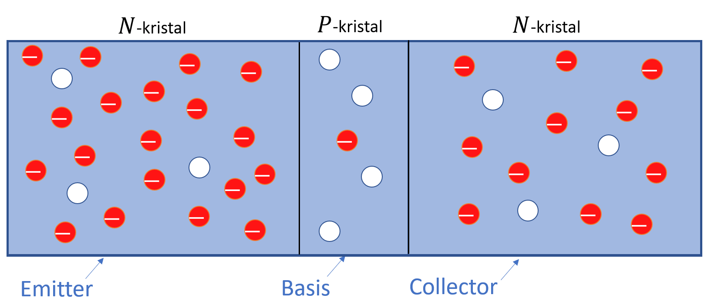
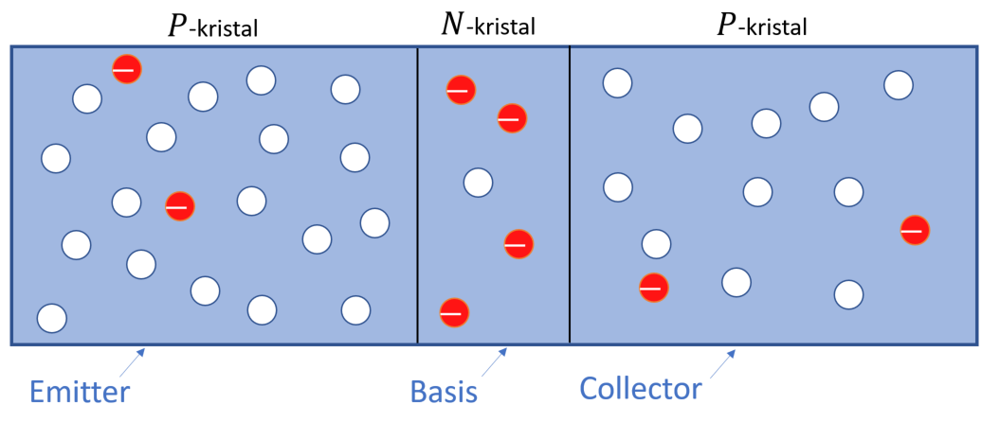
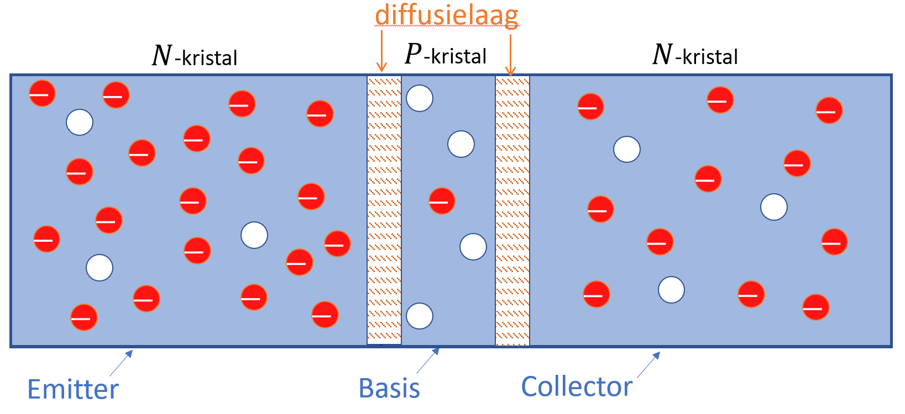
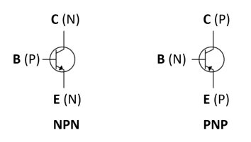
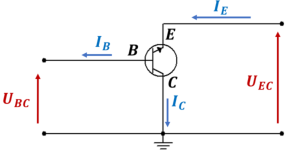
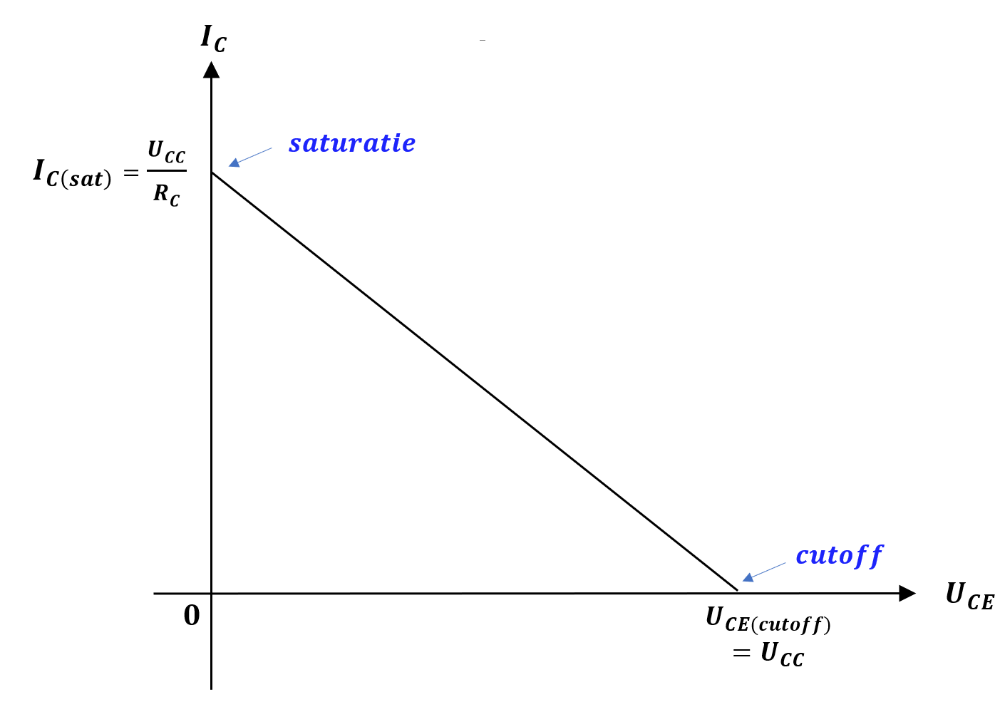

De bipolaire junctie transistor of BJT
In deze sectie wordt besproken wat de werking is van een bipolaire junctietransistor. Deze wordt ook wel eens kortweg BJT of transistor genoemd. Naast de werking wordt de samenstelling, de gebruikte standaardsymbolen en het gebruik van de belastingslijn besproken bij het instellen van de transistor.
Wat is belangrijk?
Je beschrijft de basisconstructie van een BJT.
Je geeft het verschil weer tussen een **-transistor en een **-transistor.
Je definieert de stromen die door een transistor vloeien en verklaart hun onderlinge relatie.
Je berekent en tekent een belastingslijn voor een bepaalde transistorschakeling.
Je definieert de begrippen cutoff en verzadiging.
Je defineert de spanningsversterking, stroomversterking, ingangsimpedantie en uitgangsimpedantie voor een GES-, GBS- en GCS-principeschakeling van een transistor.
Je tekent en verklaart het verloop van de transconductantiekarakteristiek bij een transistor.
Je tekent en verklaart het verloop van de uitgangskarakteristiek (collectorkarakteristiek) van een transitor in GES-schakeling.
Men kan een half geleiderkristal zodanig verontreinigen dat een of een -structuur ontstaat. Een kristal met deze structuur wordt een junctietransistor genoemd. In de -gebieden zijn er veel vrije electronen en in het (smalle) -gebied veel gaten. Hierdoor wordt een junctietransistor ook meestal bipolaire transistor genoemd.
De junctietransistor is in 1949 voor het eerst gemaakt door een team onder leiding van Shockley. In 1951 kwam de eerste serieproduktie van de junctietransistor op de markt. Sindsdien is de transistor niet meer uit de electronica weg te denken. Naast het opstarten van een miljardenindustrie heeft de transistor ook geleid tot nieuwe electronische systemen zoals geintegreerde schakelingen (IC's),
opto-electronische ontwerpen en microprocessoren.
Opbouw en principewerking van een transistor

Figuur 2-16 : opbouw van een NPN-transistor
Figuur 2-16 toont een -kristal. De emitter is zeer zwaar gedopeerd met vijfwaardige atomen en heeft als doel electronen uit te zenden naar de basis. De basis is lichtjes gedopeerd met driewaardige atomen en zeer dun. Hierdoor is het mogelijk dat de meeste "geëmitteerde" electronen de collector bereiken. De dopering vijf-waardige atomen in de collector ligt tussen de doperingsgraad van de emitter en de basis in. De collector heeft z'n naam te danken aan het feit dat in dit gebied de vrije
electronen, afkomstig van de basis, opvangt. De collector is ook de grootste van de drie gebieden. Dit betekent dat de collector meer warmte zal opwekken dan de emitter of basis. De -transistor van figuur 2-16 bevat twee -juncties. Eén tussen emitter en basis en een andere tussen basis en collector. Juist omwille van deze twee juncties wordt een transistor wel eens vergeleken met twee dioden. Doch zoals je verder zal zien, komt de werking niet overeen met twee diode in serie geschakeld waarbij de anoden met elkaar verbonden zijn. In het verloop van deze cursus noemen we de emitter-basis junctie gewoonweg emitterjunctie en de collector -basis junctie collectorjunctie.
De figuur 2-17 toont de structuur van een PNP-transistor.

Figuur 2-17: opbouw van een PNP-transistor
De figuren 2-16 en 2-17 geven de meerderheidsladingsdragers en minderheidsladingsdragers weer voor de - respectievelijk -transistor. Net als bij de diode zullen er ook vrije elektronen diffunderen door beide juncties zodat ook hier op de grens van de -juncties een diffusielaag ontstaat. Ook hier onstaat over de diffusielaag een diffusiespanning van bij als de kristallen uit siliciium bestaan ( voor germaniumkristallen). Vermits de drie gebieden verschillende doperingsgraden (verontreingingsgraden) hebben,zullen de diffusielagen verschillende breedtes hebben. Hoe groter de dopering, hoe groter de concentratie van ionen in de onmiddellijke omgeving van de junctie. Dit betekent dat de diffusielaag heel klein in het emittergebied maar relatief groot in de basis. Tussen basis en collector heeft men een analoog verschijnsel. In de basis is de diffusielaag relatief groot en kleiner in het collectorgebied. Het ontstaan van de diffusielagen voor een NPN-transistor is in figuur 2-18 weergegeven.

Figuur 2-18: op het grensgebied van de kristallen ontstaan PN-juncties
Als de emitterjunctie in doorlaat wordt aangesloten en de collectorjunctie in sper gebeurt er iets onverwachts. We verwachten met deze instelling een grote emitterstroom daar deze junctie in doorlaat ingesteld is. Vermits de collectorjunctie in sper is aangeloten hadden we niet verwacht daar ook een grote stroom aan te treffen. Toch is dit precies wat er gebeurt met deze instelling. Dit is ook de reden waarom een transistor een grote uitvinding is.

Figuur 2-19: emitterjuinctie in doorlaat en collectorjunctie in sper gepolariseerd
Figuur 2-19 geeft weer wat er gebeurt als de emitterjunctie in doorlaat wordt gepolariseerd en de collectorjunctie in sper. Wanneer de spanning tussen emitter en basis groter is dan de diffusiespanning van de emitterjunctie,zullen er vele vrije electronen via de geleidingsband vanuit de emitter in het basisgebied stromen. De electronen in de basis kunnen nu in twee verschillende richtingen bewegen. Via de dunne basis en de uitwendige basiselectrode naar de voeding of via de collectorjunctie in het collectorgebied. Welke richting nemen de vrije electronen? Dit zal voornamelijk afhangen van de energie die de vrije elektronen meegekregen hebben tijdens hun verplaatsing door de geleidingsband naar de basis toe. De vrije elektronen met weinig energie zullen gemakkelijker recombineren met de gaten die in de basis meerderheidsladingsdragers zijn. Echter doordat de dopering van driewaardige atomen in het basisgebied veel minder is als bij het -kristal van een diode, kunnen er ook veel minder vrije elektronen recombineren dan bij een normale diode. Hieruit kan je besluiten dat het aantal recombinaties in de basis veel minder zal zijn als het aantal recombinaties in het -kristal van een normale diode. Eens deze elektronen gerecombineerd zijn met de gaten van basis worden ze valentie-elektronen. Deze elektronen zullen zich verplaatsen van gat naar gat richting uitwendige basiselektrode.
Door het feit dat de basis veel dunner is dan de emitter en collector kunnen veel vrije elektronen het begin van de sperrende collectorjunctie bereiken. Deze vrije electronen die zich in de geleidinsband van de basis bevinden zijn de minderheidsladingsdragers in dit basis -kristal. We weten dat bij een diode in sper een stroom van minderheidsladingsdragers door de sperrende junctie vloeit. Deze stroom werd sper- of lekstroom genoemd bij de diode. Op analoge wijze zullen de vrije elektronen, die zich in de geleidingsband van de basis bevinden en de sperrende collector -junctie bereiken, door het sterke aanwezig elektrisch veld in deze sperlaag voortgeduwd worden naar het collectorgebied zoals in figuur 2-19 is weergegeven. In de collector bewegen deze vrije elektronen verder in de geleidingsband richting uitwendige collectorelektrode en zo verder naar de positieve klem van de spanningsbron..
Samenvattend kan men de werking als volgt verklaren : De vrije electronen verlaten de negatieve pool van de spanningsbron en komen in de emitter van de NPN-transistor terecht.. De in doorlaat gepolariseerde emitterjunctie duwt deze electronen in de basis. Deze dunne en weinig gedopeerde basis zorgt ervoor dat de elektronen voldoende levenstijd hebben om te kunnen diffunderen, via de collectorjunctie, in de collector. Het electrisch veld over de sperrende junctie zorgt er voor dat de electronen in de collector kunnen komen. Vandaar verdwijnen ze in de collectorbelasting en positieve voedingsklem van .
In de meeste transistortypen vloeit meer dan van de uit de emitter komende elektronen via de basis in de collector. Minder dan gaat via gaten naar de uitwendige basiselektrode. Vermits de elektronen vanuit de emitter worden uitgezonden komt dit gebied aan zijn naam emitter (emissie). De collector is het gebied binnen de transistor die de uitgezonden elektronen van uit de emitter grotendeels opvangt of collecteerd. Vandaar de benaming collector.
De fundamentele schakelingen van een transistor
In figuur 2-20 zijn de schemasysmbolen voor eenn -transistor en -transistor weergegeven. De pijl in het transistorsymool duidt de emitter aan. Als deze pijl naar binnen is gericht hebben we te maken met een -transistor en is deze pijl naar buiten gericht met een -transitor.

Figuur 2-20 : symbool voor - en -transistor
Bij de transistor kunnen we drie fundamentele schakelingen onderscheiden : de Gemeenschappelijke Basis-Schakeling (GBS), de Gemeenschappelijke Emitter-Schakeling (GES) en de Gemeen-schappelijke Collector-schakeling (GCS). Zoals in figuur 2-20 is te zien heeft een transistor drie aansluitingen. Om de transistor te kunnen gebruiken wordt er tussen twee aansluitingen het ingangssignaal aangelegd en tussen twee aansluitingen het uitgangssignaal afgenomen. De aansluiting die zowel gebruikt wordt voor het ingangssignaal als voor het uitgangssignaal is de gemeenschappelijke aansluiting. Indien we te maken hebben met een van deze drie schakelingen dan schrijven we voor de spanningsaanduiding tussen twee klemmen van de transistor de gemeenschappelijke klem laatst. Zo is bijvoorbeeld de spanning tussen emitter en basis bij een GBS voorgesteld door . Diezelfde spanning maar bij een GES is dan .
Wat ons vooral interesseert bij deze schakelingen is de versterkingsfactor die de verschillende basisschakelingen te bieden hebben. Ook hun in- en uitgangsimpedantie is belangrijk om te weten. Daarom zullen we steeds voor de drie schakelingen de uitgangsstroom in functie van de ingangs- stroom proberen te schrijven via een aantal vergelijkingen die we vinden door de wetten van Kirchhoff en de wet van Ohm toe te passen op de transistor.
De gemeenschappelijke basisschakeling (GBS)
Bij de GBS, zie figuur 2-21, wordt het ingangssignaal aangelegd tussen emitter en basis, het uitgangssignaal wordt afgeleid via de collector en de basis. De basis is zowel aan de ingang als aan de uitgang terug te vinden en is hierdoor de gemeenschappelijke aansluiting. Normaal wordt de gemeenschappelijke aansluiting met de massa verbonden. De emiiterstroom is de ingangsstroom en de collectorstroom is de uitgangsstroom.

Figuur 2-21 : Gemeenschappelijke basisschakeling
De transistor kan aanzien worden als een knooppunt. Toepassing van de stroomwet van Kirchhoff levert ons volgende vergelijking voor de emitterstroom .
Figuur 2-22 toont de stromen binnen in de transistor en deze die er in- en uit vloeien.

Figuur 2-23 : De stromen door een transistor
Nu de stroom gekend is, aan wat zijn dan de stromen en gelijk aan? In figuur 2-23 zie je dat de stroom zich in de basis splitst tussen een grote stroom stroom die door vloeit naar de collector en een kleine stroom die recombineert in de basis en daar naar buiten toe stroomt. Het gedeelte van de emitterstroom die naar de collector vloeit wordt het “alfade” deel van genoemd ().dat naar de basis vloeit. Ten gevolge van de omgevingstemperatuur breken er eveneens covalente bindingen in de sperlaag van de collectorjunctie. Hierdoor ontstaat vrije elektronen die eveneens van de basis naar de collector vloeien. Deze stroom wordt genoemd en is de lekstroom die van de basis naar de collector vloeit bij open emitter. Deze “open emitter” slaat op het feit dat deze stroom nog steeds blijft vloeien als men de emitter loskoppeld. is een stroom meestal ter grootte van nano-ampère tot micro-ampère.
De uitwendige collectorstroom bestaat uit de som van de stromen die toekomen in de collector. Deze zijn en . In formulevorm:
Nu de stromen en gekend zijn kan je hieruit afleiden:
Stroomversterking van een GBS
Hoeveel keer de GBS de stroom versterkt kunnen we vinden door de uitgangsstroom te delen door de ingangsstroom Het uitvoeren van deze deling leidt tot :
De lekstroom is zeer klein ten opzichte van de emitterstroom. Hierdoor kan je deze verwaarlozen ten opzichte van . De uiteindelijke stroomversterking is gelijk aan :
Meestal is gelijk aan . Dit betekent dat een GBS een stroomversterking heeft van ongeveer gelijk aan . In werkelijkheid is de stroom lichtjes verzwakt. is in de databoeken ook terug te vinden vindt als .
Ingangsimpedantie van een GBS
De ingangsimpedantie is te vinden via de verhouding van de ingangsspanning over de ingangsstroom. In formulevorm:
De ingangsspanning is gelijk aan de spanning over de emitterjunctie. Vermits de emitterjuncte in doorlaat is gepolariseerd is de AC-weerstandswaarde laag. De AC-weerstand van de emitterjunctie wordt voorgesteld door . Door de emitterjunctie vloeit de stroom . Verder uitwerken :
De ingangsimpedantie van een GBS is gelijk aan de AC-weerstand van een junctie in doorlaat. Dit is een lagen weerstandswaarde en afhankelijk van de grootte van .
Uitgangsimpedantie van een GBS
De uitgangsimpedantie is te vinden als de verhouding van de uitgangsspanning over de uitgangsstroom. In formulevorm:
De uitgangsspanning is de spanning die over de sperrende collectorjunctie staat. De weerstandswaarde hiervan wordt voorgesteld als . Aldus wordt bekomen:
De weerstandswaarde van is gemiddeld.
Spanningsversterking van een GBS
De spanningsversterking is gelijk aan de verhouding van de uitgangsspanning op de ingangsspanning. In formulevorm:
Aangezien ongeveer gelijk is aan ( of hoger) is de spannigsversterking ongeveer gelijk aan :
Algemeen vind je GBS-schakelingen vooral terug in hoogfrequent-schakelingen. Ze worden ook gebruikt in schakelingen die een lage ingangsimpedantie vereisen.
De gemeenschappelijke emitterschakeling GES
In deze schakeling is de emitter als gemeenschappelijke aansluiting geschakeld en met de massa verbonden. De principeschakeling is weergegeven in figuur 2-24. Schakelingen gebaseerd op GES komen veelvuldig voor. Ook hier kunnen we terug nagaan wat de stroom- en spanningsversterking van de schakeling is en hoeveel de in- en uitgangsimpedantie bedraagt.

Figuur 2-24: de gemeenschappelijke emitterschakeling (GES)
De stroomversterking**van een GES is ook hier gelijk aan de verhouding van de ingangsstroom op de uitgangsstroom. In deze schakeling is de ingangsstroom en de uitgangsstroom . In formulevorm:
Bij de GBS zijn de externe stromen en als volgt bepaald:
Vullen we dit in de formule voor de stroomversterking:
De lekstroom is in de meeste gevallen verwaarloosbaar. Verwaarlozen we deze lekstroom dan kan de waarde van de stroomversterking benaderend als volgt worden geschreven:
Of:
In Amerikaanse databoeken wordt deze stroomversterking ook vermeld als . In Europese databoeken ga je de stroomversterking terugvinden als . Dit betekent dat je voor de GES de stroomversterking als volgt kan schrijven:
Stel dat gelijk is aan , dan is gelijk aan:
Afhankelijk van het type transistor kan je stroomversterkingen bekomen variërend van (vermogentransistoren) tot en meer. Ook bij dezelfde typen transistoren kan sterk verschillen. Stel dat gelijk is aan in plaats van . Dit levert voor volgende waarde op:
Je kan hieruit besluiten dat een kleine afwijking van grote veranderingen in kan teweegbrengen. Dit brengt mede dat bij transistoren die in versterkerschakelingen geschakeld zijn maatregelen moeten genomen worden opdat in de schakeling ongeveer constant zal blijven.
Een ander verschijnsel dat zich voordoet bij een GES is dat de lekstroom met een waarde ) versterkt zal worden. Hiermee zal men in grote vermogenschakelingen rekening dienen te houden. De versterkte lekstroom wordt genoemd en is de stroom die zal vloeien tussen collector en emitter als de basis niet is aangesloten.
Merk op dat in figuur 2-24 de zin van de ingangsstroom tegengesteld is aan de zin van de uitgangstroom . Dit betekent dat de GES-schakeling een faseverschuiving tussen in- en uitgang van zal veroorzaken. Later meer hier over.
Ingangsimpedantie van een GES
De ingangsimpedantie van de GES is als volgt te bepalen:
De spanning is de spanning die over de geleidende emitterjunctie staat. De stroom die door deze junctie vloeit is en de AC-weerstandswaarde van deze junctie komt overeen met . Vervangen van via de wet van Ohm levert volgende vergelijking op:
De verhouding tussen en is gelijk aan . Vermits meestal meer dan is, kan je stellen dat en bij benadering aan elkaar gelijk zijn. Hiermee kan je stellen dat :
Vullen we deze vergelijking in de vergelijking van de ingangsimpedantie dan bekomen we:
Dikwijls wordt deze ingangsimpedantie ook genoemd. De relatie tussen en is gelijk aan :
Inzake weerstandswaarde is deze ingangsimpedantie in vergelijking met GBS en GCS eerder gemiddeld te noemen. Typerende waarden zijn ingangsimpedanties tussen en .
Uitgangsimpedantie van een GES
De uitgangsimpedantie is als volgt te vinden:
De uitgangsweerstand is gelijk aan de AC-weerstand van de collectorjunctie. Deze weerstand wordt genoemd. Aldus wordt bekomen:
De weerstandswaarde van de uitgangsweerstand van een GES is gemiddeld te noemen in vergelijking met GBS en GCS.
Spanningsversterking van een GES
De spanningsversterking is als volgt te bepalen:
Het minteken duidt op faseverschuiving tussen de uitgang en de ingang. De GES is de meest voorkomende schakeling en levert een groot vermogenoverdracht op (). Deze schakeling komt ook het meest voor in versterkerschakelingen.
De gemeenschappelijke collectorschakeling (GCS)
Op dezelfde wijze als bij GBS en GCS kunnen we de stroom- en spanningsversterking en de in- en uitgangsimpedantie van de principeschakeling voor een GCS bepalen. De schakeling is weergegeven in figuur 2-25.

Figuur 2-25 : Gemeenschappelijke collectorschakeling
Stroomversterkingsfactor van een GCS
Bij een GCS-schakeling is de collector gemeenschappelijk en verbonden met massa. De ingangsstroom is en de uitgangsstroom . De stroomversterkingsfactor is als volgt te bepalen:
De externe stromen en zijn gelijk aan :
Invullen in de stroomversterkingsvergelijking van een GCS :
De verhouding over is in de meeste situaties verwaarloosbaar waardoor de stroomversterking benaderend kan geschreven worden als:
De stroomversterking voor een GCS kan ook geschreven worden als . Kenmerkend voor een GCS is dat deze een grote stroomversterking heeft. Van de drie schakelingen heeft GCS de grootste stroomversterking. Daarnaast is er ook een onderling verband tussen de stroomversterkingsfactoren van de schakelingen onderling. Dit verband is het volgende:
Of:
Ingangsimpedantie van een GCS
De verhouding van de ingangsspanning op de ingangsstroom levert de ingangsimpedantie van de GCS-schakeling op. Vanuit figuur 2-25 kunnen we voor de ingangsimpedantie schrijven:
De spanning kan geschreven worden als de som van de spanningen en . Tussen de collector en de emitter wordt de belasting van de GCS-schakeling aangesloten. Deze belasting staat bijgevolg parallel met de uitgang van de transistor. Dit betekent dat de spanning over de belasting gelijk is aan . is de spanning over de in doorlaat staande emitterjunctie. Hierdoor vloeit en de AC-weerstandswaarde van de emitterjunctie is gelijk aan . In formulevorm levert dit het volgende op:
De verhouding van op is benaderend gelijk aan . De uiteindelijke ingangsimpedantie van de GCS-schakeling is dan gelijk aan:
De ingangsimpedantie is relatief hoog voor een GCS. Zeker als de belastingsweerstand een grote waarde heeft en/of de stroomversterkingsfactor groot is.
Uitgangsimpedantie van een GCS
Voor de schakeling van figuur 2-25 kan je volgende vergelijking schrijven voor de uitgangsimpedantie:
De uitgansimpedantie van een GCS is ongeveer gelijk aan de AC-weerstand van de emitterjunctie. Dit betekent dat de uitgangsimpedantie klein is. Een gevolg hiervan is dat een schakeling met een GCS aan de uitgang zich binnen een bepaald gebied als een ideale spanningsbron kan gedragen. Eveneens is de GCS bruikbaar als impedantietransformator om van een hoge impedantie over te gaan naar een lage impedantie.
Spanningsversterking van een GCS
Zoals in figuur 2-25 is te zien kan je de spanningsversterking als volgt schrijven:
Splitsen we de spanning terug op in de som van de spanningen en dan bekomen we:
Hieruit kan je concluderen dat de spanningsversterking van een GCS kleiner dan is. Vervangen we de spanningen via de wet van Ohm dan bekomen we:
Dikwijls is veel kleiner dan zodat de spanningsversterking in die situatie ongeveer gelijk aan wordt.
Transistorkarakteristieken
De transconductantiekarakteristiek
De stijlheid of transconductantantiekarakteristiek is één van de belangrijjkste karakteristieken van een transistor. De karakteristiek geeft de uitgangsstroom weer in functie van de ingangsspanning .

Figuur 2-26 : transconductantiekarakteristiek van een transistor
Het verloop van de karakteristiek kom overeen met dit van een -junctie in doorlaat. Immers is de spanning over de emitterjunctie en deze is in doorlaat gepolariseerd. Vermits nagenoeg gelijk is aan en de doorlaatstroom van de emitterjunctie is, is het verloop van eveneens gelijk aan het verloop van de doorlaatstroom van een -junctie.
De transconductantiekarakteristiek is vooral nuttig om de AC-weerstand van de emitterjunctie in doorlaat te bepalen. Voor stromen waarbij lager is dan kan men gebruik maken van volgende formule:
Aangezien kan je ook de waarde van in bovenstaande formule gebruiken. De formule om te bepalen is echter een empirische formule. Bij grotere stromen dan wordt is deze formule niet nauwkeurig genoeg meer en maak je beter gebruik van de transconductantiekarakteristiek. In die situaties kan je gebruik maken van de transconductantiekarakteristiek. Je zet de stroom uit op de karakteristiek en neemt rond dit punt een bepaalde variatie. Je leest uit de grafiek de overeenkomstige -waarden af. De wisselstroomweerstand bij deze grotere stromen vind je dan met onderstaande formule:
Uitgangskarakteristiek van een transistor
Figuur 2-27(a) toont de uitgangskarakteristiek van een transistor als GES. De karakakteristiek kan worden opgenomen door de basisstroom constant te houden en vervolgens de spanningsbron te variëren van tot een bepaalde spanningswaarde in een aantal stappen. Per ingestelde waarde van wordt de uitgangsspanning en de bijbehorende uitgangsstroom opgemeten.
| Uitgangskarakteristiek (GES) bij een bepaalde |  |
|---|---|
| Uitgangskarakteristiek (GES) met verschillende -instellingen weergegeven |  |
Figuur 2-27: Uitgangskarakteristiek van een transistor (GES)
Het verloop van de uitgangskarakteristiek is een “gebroken” lijn. De stroom stijgt snel tussen de punten en bij een spanningsstijging van tot de spanningswaarde wordt bereikt. Deze spanning wordt de kniespanning genoemd en is de spanningswaarde in het punt . Daarna blijft de stroom nagenoeg constant tussen de punten en . Eens de -spanning in het punt overschreden wordt, stijgt de stroom terug zeer snel.
Het verloop van de uitgangskarakteristiek is als volgt te verklaren. Zolang kleiner is dan worden niet alle vrije ladingsdragers die uit de emitter naar de basis vloeien aangetrokken door de collector. Naarmate toeneemt zullen ook meer ladingen overgaan van de basis naar de collector.
Op het ogenblik dat praktisch alle ladingen overgaan naar de collector wordt de karakteristiek horizontaal. Dit gebeurt vanaf een collectorspanning gelijk aan . Vanaf dat moment staat de collectorjunctie in sper waardoor de collectorstroom gelijk wordt aan . In werkelijkheid zal lichtjes stijgen omdat de sperlaag van de collectorjunctie groter wordt. Eens de -spanning groter wordt dan de spanning in het punt zal de collectorstroom terug sterk beginnen stijgen. De transistor zit nu in zijn doorslag- of breakdown gebied. De spanning over de collectorjunctie is nu zodanig groot dat de sperrende junctie zal doorslaan. Ten gevolge van het avalanche effect zal de stroom zeer sterk stijgen met blijvende beschadiging tot gevolg.
Zoals je in figuur 2-27 kan zien verandert de grootte van met de grootte van . Er is nagenoeg een lineair verband tussen en .
Cutoff-toestand en saturatietoestand van een transistor op een belastingslijn
Als gelijk is aan nul vloeit er geen maar enkel een kleine hoeveelheid lekstroom die te verwaarlozen is. De transistor bevindt zich dan in de toestand . In zijn zowel de emitterjunctie als de collectorjunctie in sper aangesloten. Vermits de collectorstroom zo goed als nul is, is de spanning over de collectorweerstand ongeveer gelijk aan . De spanning is dan nagenoeg gelijk aan de volledige voedingsspanning .
Van zodra de emitterjunctie in doorlaat is gepolariseerd en de basisstroom wordt vergroot dan zal de collectorstroom eveneens vergroten. Het gevolg hiervan is dat de spanning over de collectorweerstand zal stijgen waardoor dan weer daalt.
|  |  |
|---|---|
| Ideaal saturatiepunt en cutoffpunt | Werkelijk saturatiepunt en cutoffpunt |
Figuur 2-28 : saturatie en cutoff op een belastingslijn
Wanneer voldoende groot is, staat ongeveer de volledige voedingsspanning over de collectorweerstand en nagenoeg geen spanning meer over de transistor. In het ideale geval is dan gelijk aan nul volt. Deze conditie staat bekend als saturatie (verzadiging). Saturatie treedt op als de voedingsspanning over de totale weerstand van het collectorcircuit staat. De verzadigingsstroom is te vinden met volgende formule:
Van zodra hoog genoeg is om verzadiging te veroorzaken, is de formule voor de stroomversterking niet langer meer geldig. Er is immers dan geen lineair verband meer tussen basisstroom en collectorstroom. Ideaal is de saturatiespanning gelijk aan . Praktisch zal deze waarde zich meestal bevinden tussen de tot . kan oplopen tot voor vermogen-transistoren.
De rechte lijn in figuur 2-28 tussen het saturatiepunt en cutoff stelt de belastingslijn van de schakeling voor. Het snijpunt van de belastingslijn met een horizontale lijn van uitgangskarakteristiek stelt het werkpunt of instellingspunt voor van de transistor (later meer hier over). Net zoals bij de diode liggen alle mogelijke instellingspunten die in de betreffende schakeling mogelijk zijn op deze belastingslijn.
Test jezelf aangaande de bipolaire junctietransistor
Wat is het verschil tussen een -transistor en een -transistor?
Uit welke interne stromen is de uitwendige collectorstroom samengesteld?
Uit welke interne stromen is de uitwendige basisstroom samengesteld?
Hoe kan je bepalen bij een eenvoudige transistorschakeling?
Omschrijf het begrip saturatie (verzadiging)
Omschrijf het begrip cutoff.
Aan wat is de spanningsversterking gelijk aan bij een GES?
Aan wat is de ingangsimpedantie gelijk aan bij een GBS?
Wat is het verband aan stroomversterking tussen GCS, GES en GBS?
Wat kan je bepalen via de transconductantiekarakteristiek?
Verklaar het verloop van de uitgangskarakteristiek van een GES.